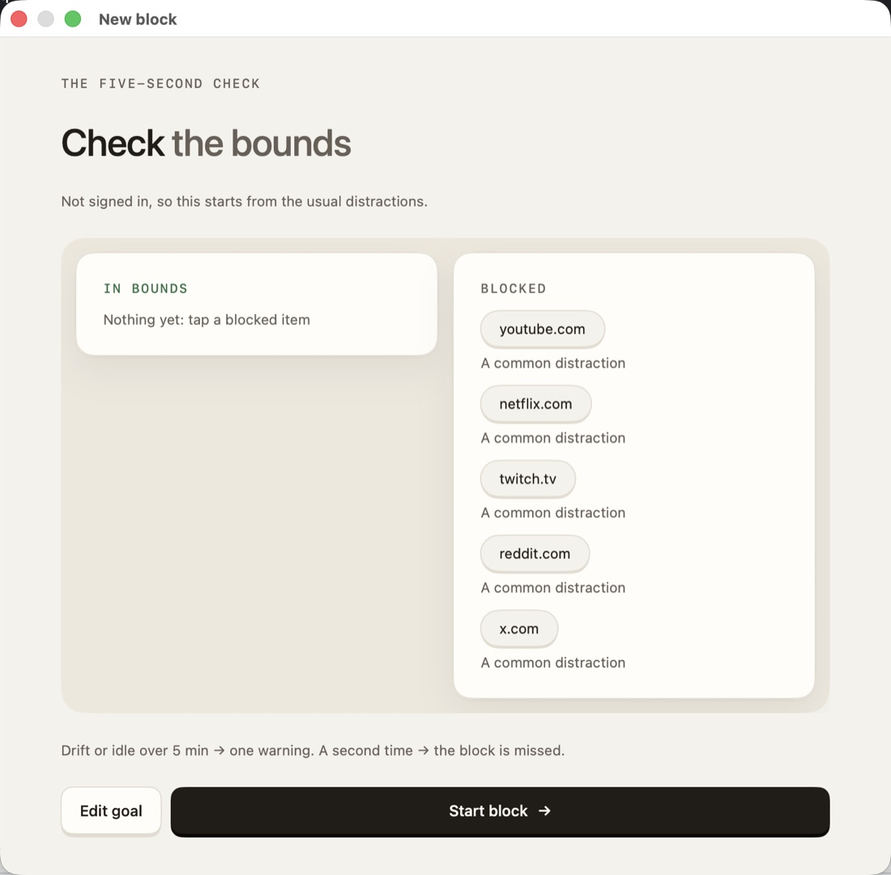
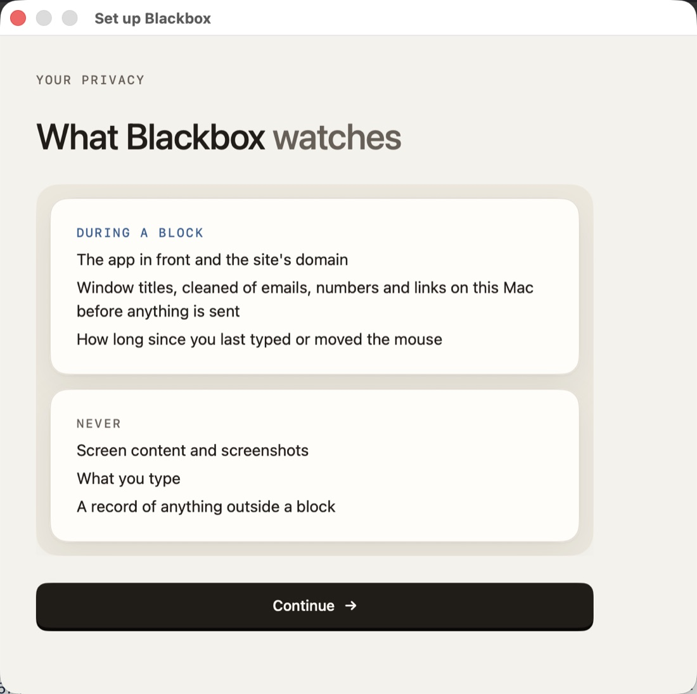
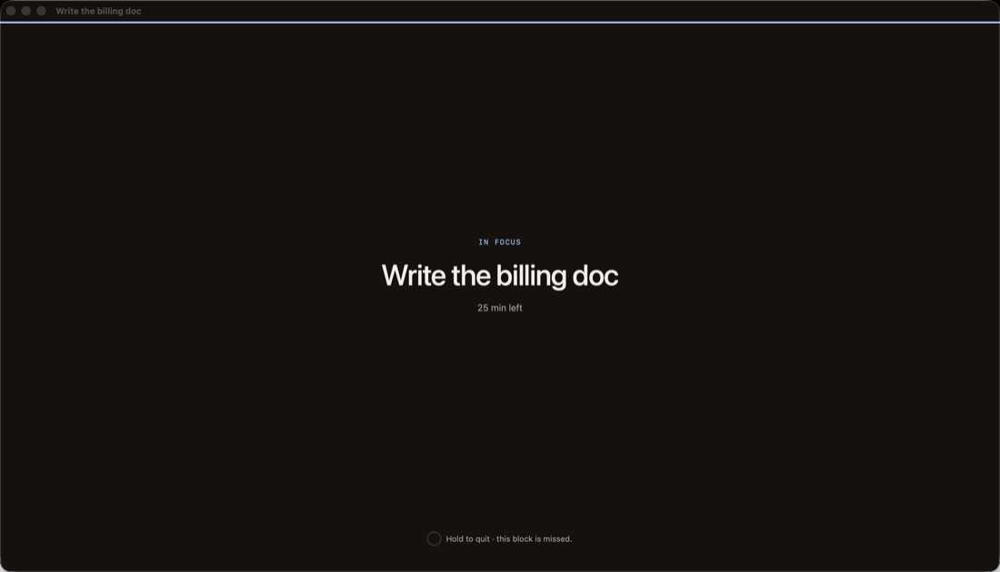

MakeWrite, code, design
It reviews what you made.
Strengths first, then up to seven fixes, each with its principle and the exact line.
For deep work, on your Mac
A focus coach that lives on your Mac. It keeps you on the work that matters, then shows you how to do it better.
Write the design doc for the billing migration
32 min left
What you did well
You named the rollback plan before the risks. Readers trust a plan they can undo.
One thing to do better
Lead with the decision. It sits in section 4; most readers stop after the first paragraph.
Answer first · The Pyramid Principle
We all have the same AI tools now. What sets people apart is the work only they can do: thinking hard about a problem, and knowing what good looks like.
That takes long stretches of focus and honest feedback. Most of us get neither. Our desks are built to interrupt us, and real feedback comes rarely, late, or never.
Blackbox fixes both. It protects your time, then helps you get a little better with every block. It's early. Try it and tell us what you think.
Rishi, founder
Focus
Say what you'll do. Only the apps and sites it needs get through until the time is up.
Improve
After each block, see what you did well and what to do better next time, and why.
Stay consistent
Repeat a block every weekday and watch your streak grow. Add a small stake if you want a push.
1Before · 10 seconds
Up to five tasks: something to make, a teammate's PR to review, or something to learn. Blackbox suggests the apps and sites they need; you approve the list.
2During · 25–90 minutes
Your current task and the time left, nothing else. Tick it off and the next one moves up. Wander off for 5 minutes and you get one gentle warning.
3After · 2 minutes
What went well, a short list of fixes that each teach the principle behind the change, and one more day on your streak.
How it helps you improve
Each task gets the feedback that fits it. You always go first: Blackbox never does the work for you. It shows you how to do it better, and why.
MakeWrite, code, design
Strengths first, then up to seven fixes, each with its principle and the exact line.
ReviewA teammate's PR
Review the PR yourself, then see what you caught, what a strong reviewer would add, and your comments made clearer.
LearnA system or a paper
Explain it back in a few sentences. Blackbox checks it against the real source and asks again a week later, so it sticks.
The real app



Learn
Most feedback tells you what to change. Blackbox tells you why, using the principles the best people in your craft rely on, so each block makes the next one better.
Reviewed as a design docDue 6 pm
Lead with the decision
The recommendation sits in section 4. Readers who stop after the first paragraph will miss it. Open with the choice and the one reason that matters most.
Fix 2 of 3Passed
Name the rollback plan
| What you get | Focus timer | Blackbox |
|---|---|---|
| Counts the minutes | Yes | Yes |
| Shuts out what isn't your goal | No | Yes |
| Knows what your work needs | No | Yes |
| Reviews what you made, with sources | No | Yes |
| Coaches your code reviews and checks what you learned | No | Yes |
| Keeps you showing up, with optional stakes | No | Yes |
Deep work compounds when it's daily. Choose a recurring block, say 9 am every weekday, and Blackbox runs it on schedule with nothing to re-plan.
Recurring block$10
Deep work on the billing migration
Weekdays · 9:00 am · 90 min
12 day streak
Early access for macOS. One email when it's ready, nothing else.